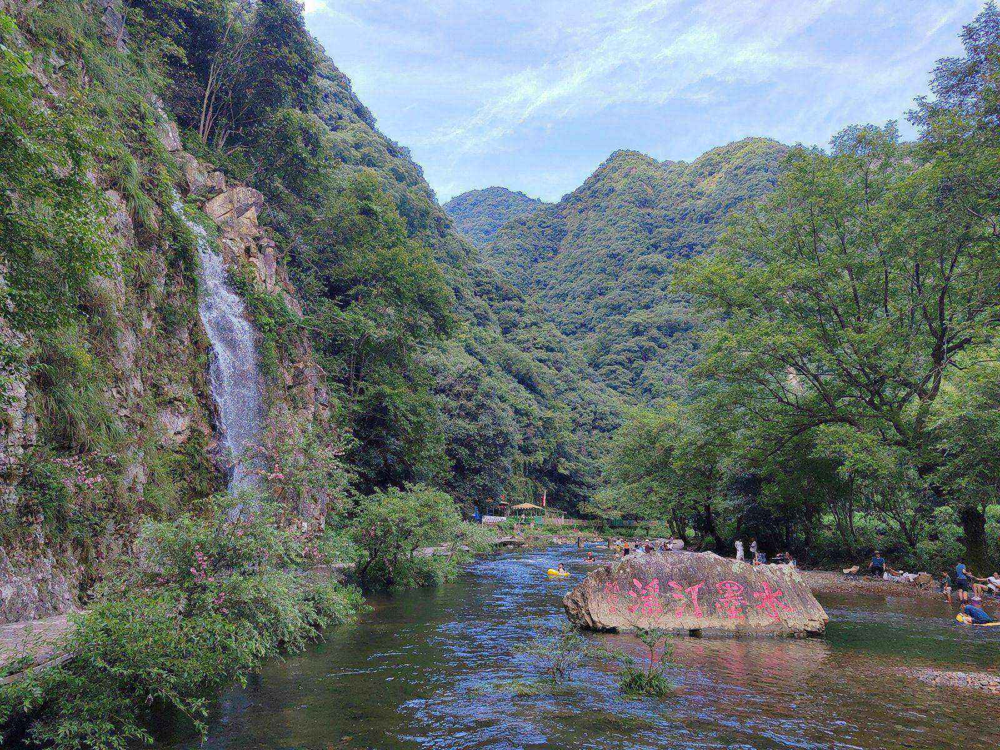
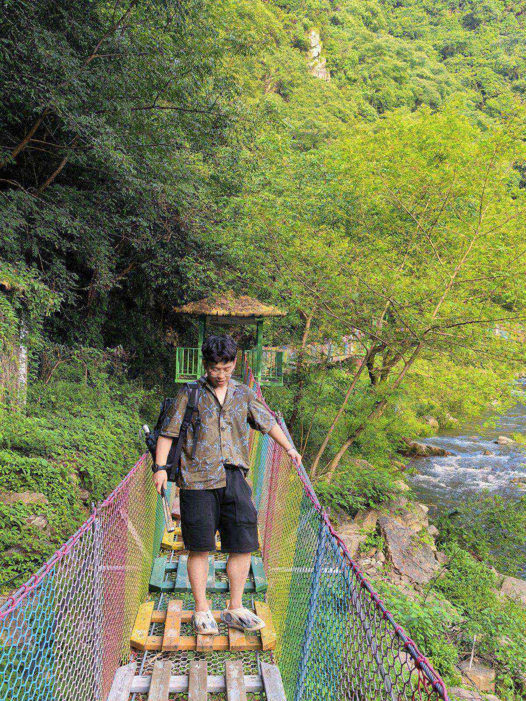
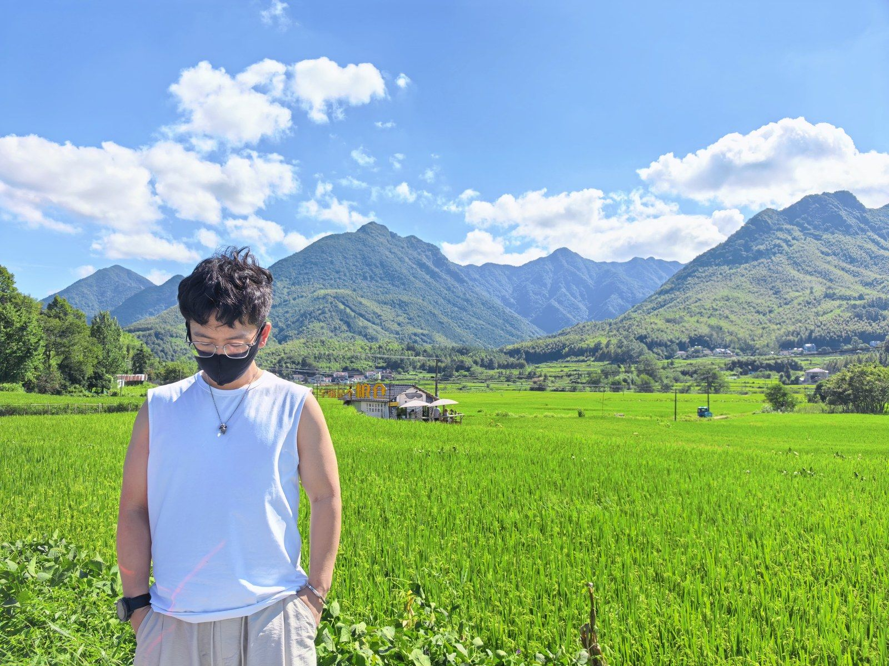
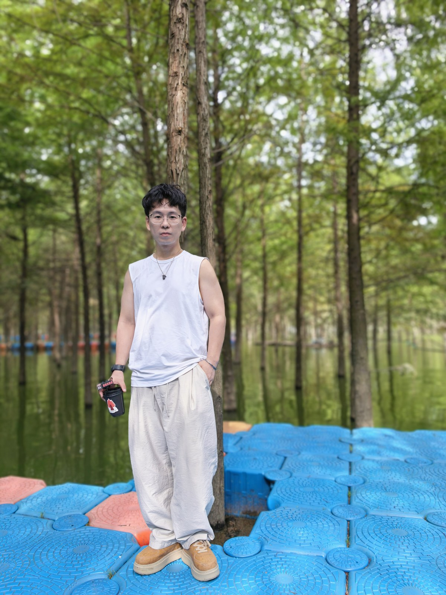
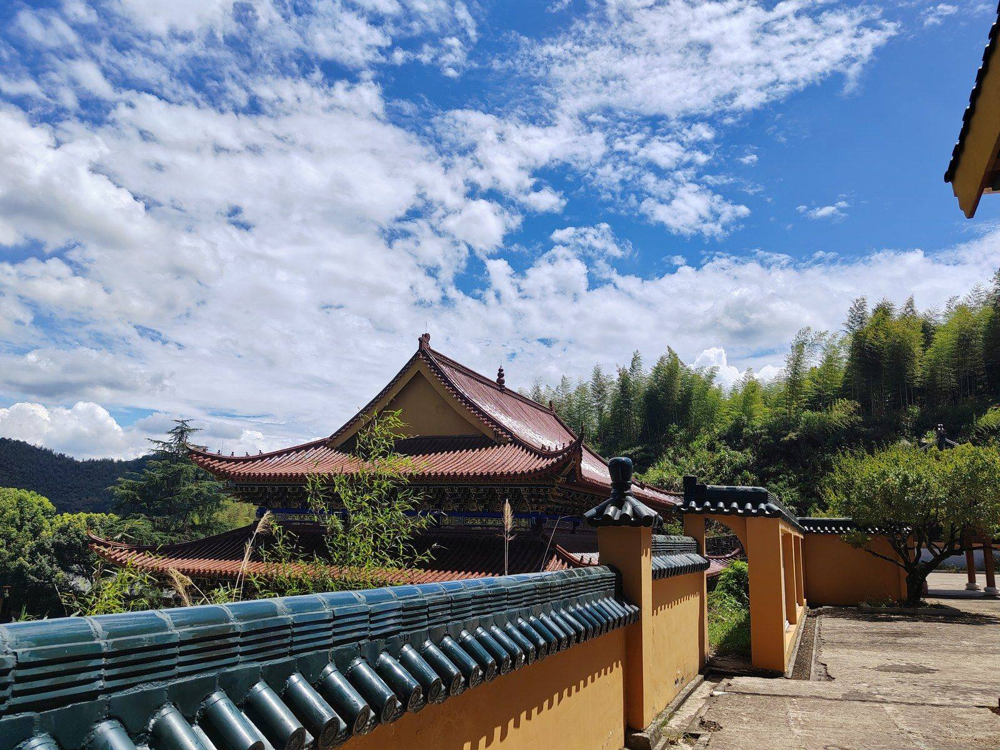
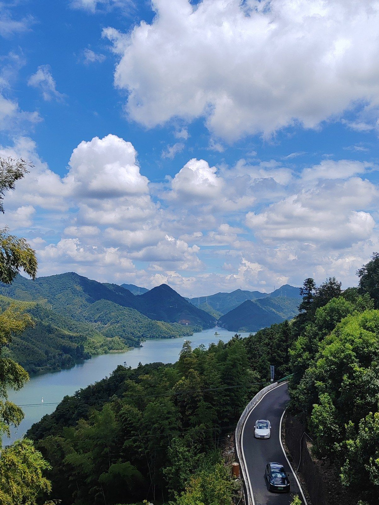
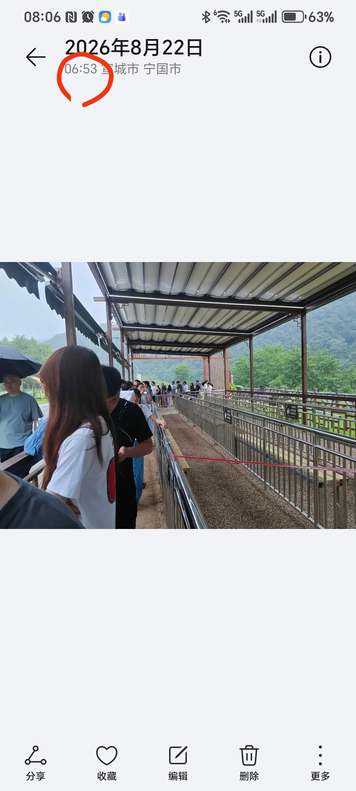
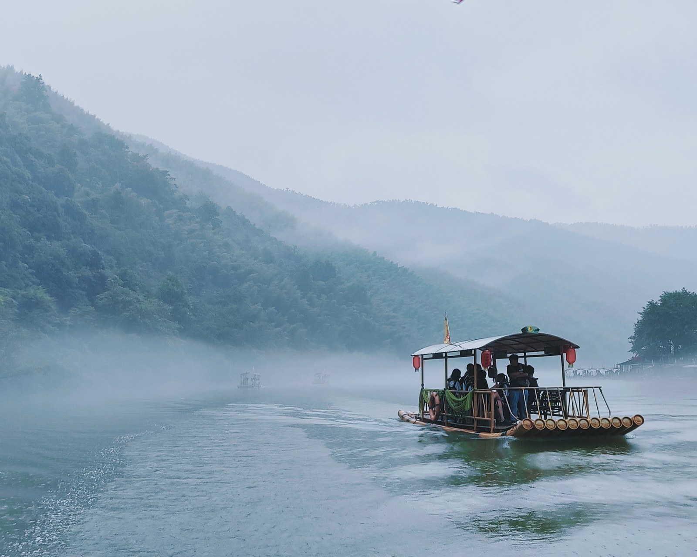

这趟皖南之行，起因其实很简单。
我妈在朋友圈看到一张图——汀溪那边的山景民宿照片，云雾在山腰里绕，仙气得不行。她当时就动了心思，转头跟我说"要不要去那边看看"。
从想法到初步的攻略，其实就1~2天功夫，主要确定几件事：哪几天住哪、第二天主要玩什么、第三天的核心是哪个景点。剩下的留给当天再说——自驾游最怕的不是迷路，是行程表比景点还厚。
上午8点出发，从上海一路高速到泾县差不多4小时。中午直接在服务区解决的午饭，下午一点多才到月亮湾。
月亮湾就是一片浅滩和鱼鳞坝，旺季人多得像下饺子。人多就人多吧，反正我们就是来玩水的，穿凉鞋下去踩就行。水浅，老人下去走走也安全。
从月亮湾开15分钟到水墨汀溪风景区。这里有个细节要提醒一下：大门票¥50，但想走精华的栈道需要另外买票，别到了门口才发现。
景区不大，慢慢走2小时足够了。傍晚我们就到了汀溪乡的民宿——兰亭小筑，¥240一晚。
说实在的，这家住宿条件一般。但它开在山腰上，第二天早上5点多醒来看窗外，山间雾气一层一层浮在脚下，那一瞬间值回房价。
住山里的民宿，别挑豪华，挑视野。这是这趟学到的第一课。


第二天8点准时出发。要说皖南这趟最容易被坑的，就是桃岭六道湾的进出方向。
我出发前查过攻略，很多博主都说西进东出。一开始还半信半疑——等真开起来才知道这建议不是开玩笑的：东进方向的对向车流明显更密。一路上看着对面排成长龙的车，心里默默庆幸。
桃岭六道湾是有几个观景台的，但车一多，停车点就显得不够用。我们本来计划停3个点，最后只在一个点停了一会，匆匆拍了几张就走了。
开到桃岭尽头，我才意识到一件事：这条路的精髓不是"拍照"，是"开车"。
弯道、上下坡、远处的山脊线——这些才是这条路的灵魂。别为了找停车点错过了风景，这是我的建议。
中午到板桥村吃午饭，土菜馆点了山笋炖腊肉和农家锅巴。皖南"桥畔宿集"这一带的土菜水平都还可以，随便挑一家不会出错。
下午杀到方塘落羽杉湿地公园。
这里有个坑很多攻略（包括AI生成的）都没说清楚的点：网上都说这里是免费景点，实际上只有栈道和划船两种付费项目。栈道¥50一张。
我出发前虽然做了攻略，但没查仔细。到了现场才发现要买票。
栈道不长，但水杉配倒影确实出片。不过这次来是8月，杉树全是绿的——想要红色，得11月来。两个季节各有各的好处，看你更想要"玩水"还是"看红叶"。
晚上住方塘乡。


第三天的核心是惠云禅寺。
出发前我计划的是从青龙湾乘船、再爬600多节台阶上山到禅寺。但看了一眼这个台阶数，我直接放弃——带父母不适合走这种路线。
后来改成直接驱车上山。虽然也是山路，但比桃岭六道湾难度低一点，慢点开没问题。
寺里很干净，建筑也漂亮。最惊喜的是站在禅寺俯瞰整个青龙湾——这个视角在山下花钱都看不到。
带父母旅行，"省力"比"完整"重要。这是我学到的第二课。
下午到了储家滩。这里有两个码头，葛洪码头适合夜游，西津野渡适合早上（明天会说）。下午来基本就只剩踩水这一项，人多得像下饺子，体验一般。
储家滩更适合带小朋友，大人会觉得"就这？"
晚上去河沥溪老街逛了一圈，离储家滩还有一段距离，老街不大，氛围一般。可去可不去，我觉得不用专门跑。


这趟皖南之行真正让我觉得"值了"的，是今天早上。
我是5:30起床，6:00出发，6:20到西津野渡码头。码头7点才开门，我到的时候6:40，已经有十几个人在排队了。
第一波大概有5-6条船，一条船坐10人。7点开门，队伍一放就散了。
为什么要赶这么早？
西津野渡的精髓是湖面泛舟看晨雾。而晨雾出现的时间窗口，是早上6:30到8点出头。错过这个时段，就看不到。
更巧的是，那天还下着小雨。下雨天晨雾出现的概率更大——结果我真的遇到了。
船行到湖中央的时候，水面上一层薄薄的雾气浮起，远处山影朦胧得像水墨画。我妈之前一直担心看不到晨雾、觉得不值。看到这一幕的时候，她开心得像个第一次看到雪的小孩。
带父母旅行，最有价值的不是去了多少景点，而是他们开心的那个瞬间。这是我学到的第三课，也是这趟旅行最重要的收获。
看完晨雾回酒店补了个觉，10点多又去云深不知处咖啡店那片区域踩水喝咖啡。水比想象的浅，成人夜游体验相当一般，小朋友可以试试，更适合踩水+拍拍照+发朋友圈。
中午吃完饭就启程回上海了。


第一，行程规划别贪多，但要有方向感。 出发前定好——景点、路线、住宿——心里有数，路上才不慌。但留点余地给临时变化。自驾游最怕的不是迷路，是行程表比景点还厚。
第二，桃岭六道湾推荐西进东出。
第三，4天3晚有点冗余，3天2晚可能更合适。 月亮湾、板桥、方糖这几个点感觉都能砍掉
第四，季节要看你的取舍。 暑期能踩水但红杉林是绿的；11月能看红杉但不能踩水。两个各有各的好，看你更想要哪一种体验。
#皖南自驾 #皖南川藏线 #泾县旅游 #储家滩 #落羽杉 #晨雾 #西津野渡 #带父母旅行 #上海周边游 #小众旅行地